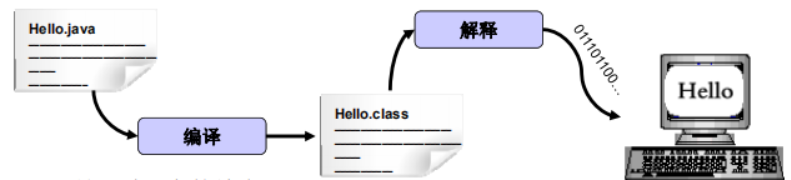
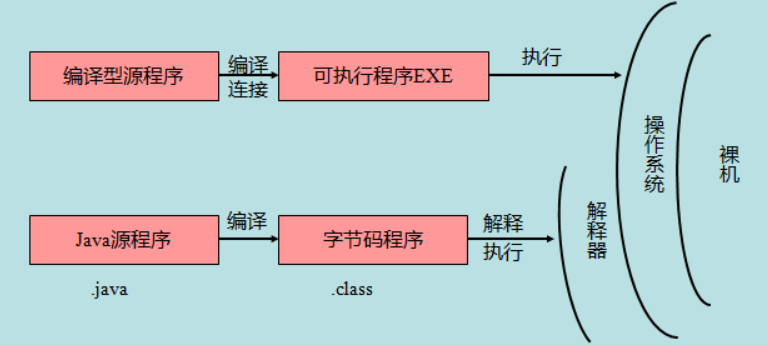

基础概念
概念解释
JavaSE（Java Platform Standard Edition 标准版）
JavaSE是Java的基础，包括面向对象、多线程、IO等等基础知识
JavaEE（Java Platform，Enterprise Edition 企业版）
在JavaSE的基础上，提供 Web 服务、组件模型、管理和通信 API，可以用来实现企业级的面向服务体系结构（service-oriented architecture，SOA）和 Web 2.0 应用程序
JavaME（Java Platform，Micro Edition 微型版）
面向嵌入式等设备应用的开发
JVM：Java Virtual MachineJava虚拟机JDK：Java Development kitJava开发者工具JRE：Java Runtime EnvironmentJava运行时环境
JDK 安装
- 下载电脑对应版本的
JDK,下载地址：https://www.oracle.com/downloads - 安装
JDK - 配置环境变量
JAVA_HOME。在系统变量path中添加%JAVA_HOME%\bin;%JAVA_HOME%\jre\bin; - 使用
java -version测试
JDK 卸载
- 删除
JDK安装目录 - 删除环境变量
JAVA_HOME - 删除
path下关于Java的目录 - 使用
java -version测试
Hello World
- 编写
java文件1
2
3
4
5public class Hello {
public static void main(String[] args) {
System.out.print("hello world");
}
} javac.\Hello.java：使用javac编译 Java文件，生成.class文件java .\Hello运行
注意：Java大小写敏感；类名必须与文件名一致
Java 跨平台原理
- 编译之后会生成与平台无关的字节码文件
- 需要依赖不同平台的虚拟机（JVM）
Java 运行机制
计算机高级编程语言类型分为：
- 编译型
- 解释型
Java 是两种语言的结合（编译命令：javac.exe 解释命令：java.exe）
javac：负责编译部分，当执行javac时会启动Java的编译器程序。对指定扩展名的.java文件进行编译。 生成jvm可识别的字节码文件也就是.class文件java：负责运行部分，会启动jvm加载运行时所需的类库，并对.class文件进行执行，一个文件要被执行，必须要有一个执行的起始点，这个起始点就是main函数
Java程序组成：
- Java源文件
- 字节码文件
- 机器码指令

编译型与解释型运行区别：

Java 基本语法
- Java 严格区分大小写
- 一个 Java 源文件（ .java ）里可以定义多个 Java 类，但其中最多只能有一个类被定义成 public 类；若源文件中包含 public 类定义，则该源文件的文件名必须与该 public 类的类名相同
- 一个源文件中包含 n 个 Java 类时，成功编译后会生成 n 份字节码文件（ .class），即每个类都会生成一份单独的 class 文件，且字节码文件名和其对应的类名相同
- 若一个类必须运行，则必须拥有 main 方法
8种基本数据类型
- 整数类型：
byte，short，int，long - 浮点数类型：
float，double - 字符类型：
char - 布尔类型：
boolean
计算机内存最小存储单元是字节（byte）即8个bit。一个字节是1byte，1024字节是1K，1024K是1M，1024M是1G，1024G是1T。
| 数据类型 | 占位（字节） | 数据范围 | 初始值 |
|---|---|---|---|
| byte | 1 | [-128~127] | 0 |
| short | 2 | [32768 ~ 32767] | 0 |
| int | 4 | [-2147483648 ~ 2147483647] | 0 |
| long | 8 | [-9223372036854775808 ~ 9223372036854775807] | 0L |
| float | 4 | [+/-3.4E+38F（6~7 个有效位）] | 0.0F |
| double | 8 | [+/-1.8E+308 (15 个有效位）] | 0.0D |
| char | 2 | ISO 单一字符集 | \u0000 表示空 |
| boolean | 1 | true 或 false | false |
1 | public static void main(String[] args) { |
面向对象编程
Getter/Setter
一个
class可以包含多个field，但是直接把field用public暴露给外部可能会破坏封装性。为了避免外部代码直接访问field，可以用private修饰field，拒绝外部访问。通过调用field的get、set方法来让外部代码可以间接修改field，这时可以在方法内部对参数进行检查。
1 | public class GetterSetter { |
方法
1 | public class Method { |
方法重载
1 | public class MethodOverload { |
构造方法
1 | public class Constructor { |
继承
继承中子类无法访问父类的
private字段或者private方法。为了让子类可以访问父类的字段，需要把private改为protected。把字段和方法的访问权限控制在继承树内部，一个protected字段和方法可以被其子类，以及子类的子类所访问
1 | public class Extends { |
抽象类
由于多态的存在，每个子类都可以覆写父类的方法，如果父类方法没有实际意义不需要实现任何功能，仅仅是为了定义方法签名，目的是让子类去覆写它，可以把父类的方法声明为抽象方法。如果存在抽象方法则类也必须是抽象的，抽象类本身被设计成只能用于被继承，因此，抽象类可以强迫子类实现其定义的抽象方法，否则编译会报错
1 | public class Abstract { |
接口
在抽象类中，抽象方法本质上是定义接口规范即规定高层类的接口，从而保证所有子类都有相同的接口实现以实现多态。但如果一个抽象类没有字段，所有方法全部都是抽象方法则可以考虑把该抽象类改写为接口
接口是比抽象类还要抽象的纯抽象接口，因为它连字段都不能有(实例字段不能有，但是静态字段可以)。因为接口定义的所有方法默认都是
public abstract的，所以这两个修饰符不需要写出来（写不写效果都一样）
1 | public class Interface { |
静态字段和方法
静态字段属于类本身而不是类的实例，实例字段的特点是：每个实例都有独立的字段，各个实例的同名字段互不影响。实例字段在每个实例中都有自己的一个独立“空间”，但静态字段只有一个共享“空间”，所有实例都会共享该字段
1 | public class Static { |
内部类
TODO: